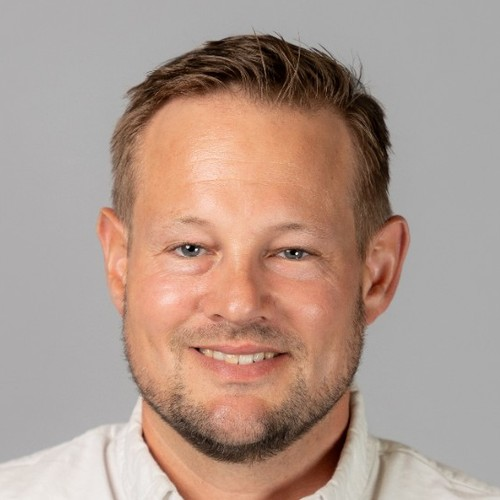
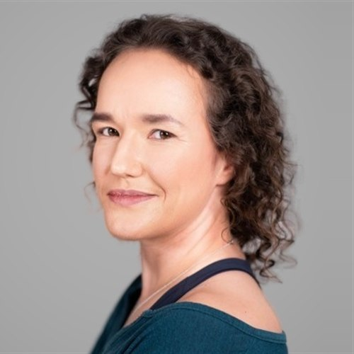
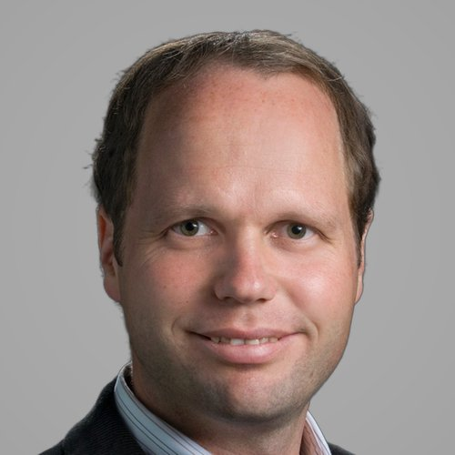
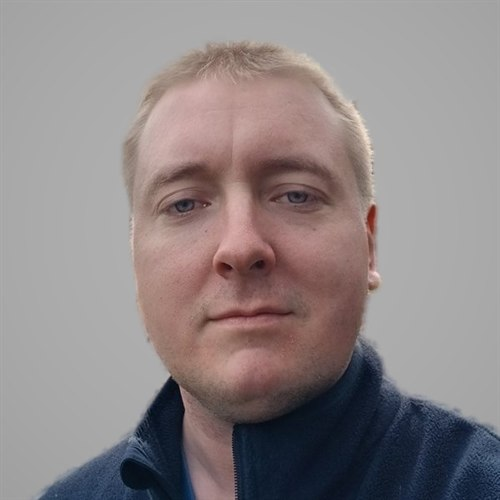
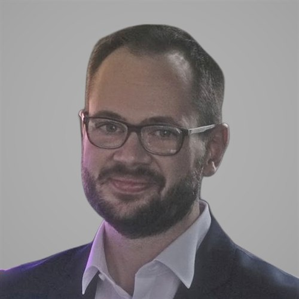
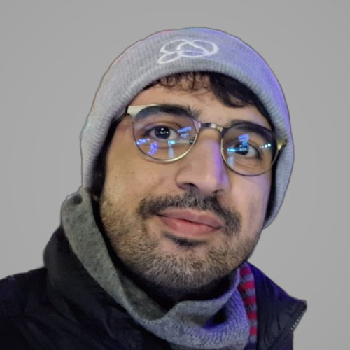
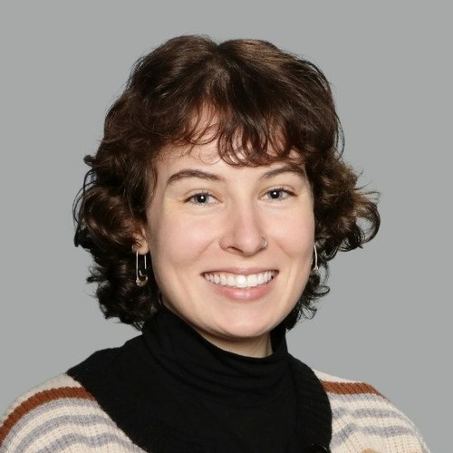
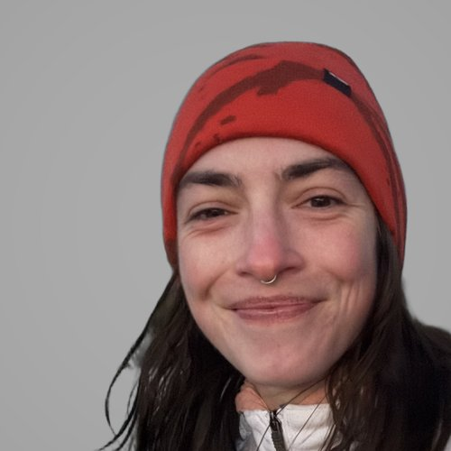
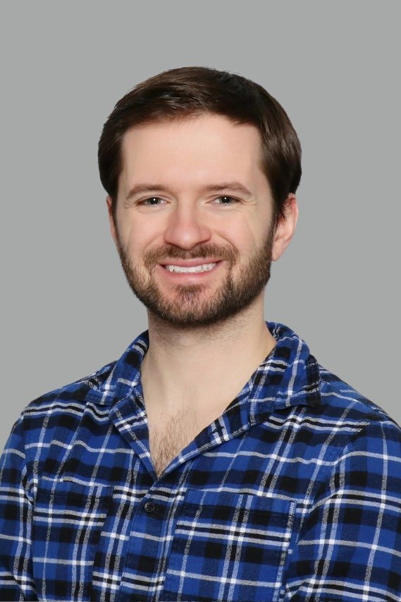

Faculty

Matthias DanningerAssociate Professor, Canada Research Chair. ATLAS; P-ONE scientific spokesperson- Darren GrantProfessor, Canada Excellence Research Chair. Astroparticle physics
- Dugan O'NeilExperimental particle physics

Luise PoleyAdjunct Professor; TRIUMF project scientist. ITk
Bernd StelzerProfessor. ATLAS Higgs and top quark physics; ITk- Mike VetterliProfessor Emeritus
Postdocs and researchers
- Scott BeaupreResearch engineer
- Jiayi ChenPostdoctoral researcher

Andreas GaertnerPostdoctoral researcher
Patrick KrausePostdoctoral researcher- William LuszczakPostdoctoral researcher
- Theo MaurinPostdoctoral researcher
- Caleb MillerPostdoctoral researcher
- Jack OsiejaResearch assistant
- Peter SpeersResearch assistant
- Jakub StachoPostdoctoral researcher
Students
- Aman AmanMSc candidate

Atakan AzakliPhD candidateSupervisor: Bernd Stelzer- Harshit ChoudharyPhD candidateSupervisor: Matthias Danninger
- Nikita DolganovMSc candidateSupervisor: Bernd Stelzer

Annabelle GrimesPhD candidateSupervisor: Darren Grant- Vincent JourdenaisMSc candidate

Metea MarrPhD candidateSupervisor: Bernd Stelzer- Sam MoirPhD candidateSupervisor: Matthias Danninger

Ben NicholPhD candidateSupervisor: Darren Grant- Richard SalamiPhD candidateSupervisor: Bernd Stelzer
- Nathan SlingerlandPhD candidate
Former members
- Sina BahrasemaniPhD 2019Supervisor: Dugan O'Neil
- Jackson BurzynskiPostdoctoral researcher
- Etienne DreyerPhD 2021Supervisor: Bernd Stelzer
- Dilraj GhumanPhD 2026Supervisor: Matthias Danninger
- Hamza HanifPhD 2025Supervisor: Matthias Danninger
- Felix HenningsenPostdoctoral researcher
- Arthur James HortonPhD 2017Supervisor: Mike Vetterli
- Benjamin JägerPhD 2022Supervisor: Bernd Stelzer
- Konstantin LehmannPhD 2022Supervisor: Bernd Stelzer
- Bingxuan LiuPostdoctoral researcher
- Koos van NieuwkoopPhD 2017Supervisor: Bernd Stelzer
- Damian SheppardMSc 2025Supervisor: Bernd Stelzer
Want to join the group?
We welcome graduate and undergraduate students interested in particle and astroparticle physics.